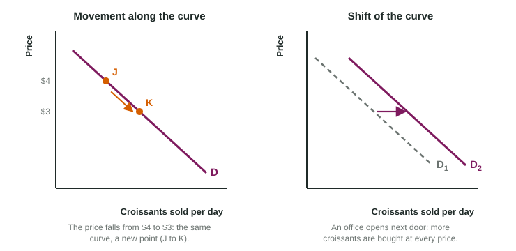

Shifts and Movements Along a Curve
A curve on a market graph shows how quantity relates to price with everything else held equal.
Part 1 · Hook
Why this matters
Part 2 · Before you start
What this builds on
Part 3 · Prerequisite check
Quick check before you start
1. On a market graph, the price of the good is on
- the vertical axis
- the horizontal axis
- neither axis
- both axes
Show the answer
Quantity goes across, price goes up.
- Correct: the vertical axis:
- the horizontal axis:
- neither axis:
- both axes:
2. A curve that falls to the right has
- a negative slope
- a positive slope
- a slope of 0
- no slope at all
Show the answer
The vertical value falls as the horizontal value rises.
- Correct: a negative slope:
- a positive slope:
- a slope of 0:
- no slope at all:
Part 4 · See it
See it first

Part 5 · Step by step
How it works, step by step
- Something changes in the marketyou ask whether it is one of the two variables on the axes
- It is the variable on an axis (the good's own price)buyers or sellers move along the same curve to a new point
- It is anything else (incomes, costs, the number of buyers)the whole curve shifts right or left, to a new curve
- You draw the shiftyou keep the old curve labeled with subscript 1, add the new one with subscript 2, and draw an arrow between them
Part 6 · Key ideas
Key ideas
- Each curve holds everything except its two graphed variables constant ("other things equal").
- A change in a variable on one of the axes is a movement along a curve: a new point, the same curve.
- A change in anything else is a shift of a curve: the whole curve moves to a new position.
- A shift right means a larger quantity at every price; a shift left means a smaller quantity at every price. Say "right" or "left", not "up" or "down".
- Draw a shift so it scores: old curve with subscript 1, new curve with subscript 2, an arrow from old to new.
Part 7 · Misconception
A common mistake
The wrong idea: The bakery cut its price and sold more croissants, so the curve D shifted right.
What actually happens: Price is on the vertical axis, so a price cut moves buyers down along the same curve D to a larger quantity. D shifts only when something other than the croissant's own price changes.
Part 8 · Check yourself
Check yourself
Exam-style questions. Anything you miss goes into your review queue.
1. On a graph with price on the vertical axis, which change causes a movement along a curve rather than a shift of it?
- A change in the number of buyers
- A change in buyers' incomes
- A change in the price of the good itself
- A change in the cost of the sellers' materials
Show the answer
Only a change in a variable on one of the axes moves the market along the curve. The good's own price is on the vertical axis.
- A change in the number of buyers: The number of buyers is not on an axis, so a change in it shifts the curve.
- A change in buyers' incomes: Income is not on an axis, so a change in it shifts the curve.
- Correct: A change in the price of the good itself: Right: price is on an axis, so the market moves along the curve.
- A change in the cost of the sellers' materials: Material costs are not on an axis, so a change in them shifts the sellers' curve.
2. A new apartment building opens and at every price more people want to buy sandwiches at a deli. Shift the right curve the right way.
Work on the graph (it needs JavaScript), then check.
Show the answer
More sandwiches wanted at every price is a shift of the buyers' curve D to the right. The sandwich price did not cause it, so it is not a movement along D.
- Key: demand shifts right
3. The flour a bakery buys becomes more expensive, so at every price the bakery offers fewer loaves. Shift the right curve the right way.
Work on the graph (it needs JavaScript), then check.
Show the answer
Fewer loaves offered at every price is a shift of the sellers' curve S to the left.
- Key: supply shifts left
4. A student says, "The price of bus fares fell, so the curve D for bus rides shifted right." What is wrong with the claim?
- A lower fare shifts D left, not right
- The fare is on the horizontal axis, so D stays put
- Nothing is wrong: a lower fare shifts D right
- A fare change is a movement along D, not a shift
Show the answer
The fare is the price on the vertical axis. A lower fare moves riders down along the same curve to more rides.
- A lower fare shifts D left, not right: A price change does not shift D in either direction.
- The fare is on the horizontal axis, so D stays put: Price is on the vertical axis of a market graph, not the horizontal one.
- Nothing is wrong: a lower fare shifts D right: A price change is a movement, not a shift.
- Correct: A fare change is a movement along D, not a shift: Right: a price change is a movement along the curve.
Scenario
Marlow Street Bakery's busy week
Marlow Street Bakery keeps a graph of its croissant market: price per croissant on the vertical axis, croissants sold per day on the horizontal axis, a downward curve D for its customers and an upward curve S for what it offers. During one week: on Monday the bakery cuts the price of a croissant from $4 to $3. On Tuesday a large office opens next door. On Thursday the butter the bakery buys doubles in price. On Friday a cafe across the street starts selling its own croissants for $2. (An invented bakery.)
5. On Monday the bakery cuts the price of a croissant from $4 to $3. How does its graph show this?
- A shift of D to the right, at each price
- A movement down along D
- A shift of D to the left, at each price
- A movement up along D to a smaller quantity
Show the answer
The price is on the vertical axis, so a lower price moves buyers down along D to more croissants sold.
- A shift of D to the right, at each price: The price change does not shift D; it moves buyers along it.
- Correct: A movement down along D: Right: same curve, new point.
- A shift of D to the left, at each price: Nothing about buyers changed except the price, so D stays put.
- A movement up along D to a smaller quantity: A LOWER price moves buyers down along D, to a larger quantity.
Part 9 · Summary
Summary
Part 10 · Up next
What comes next
Part 11 · Connections